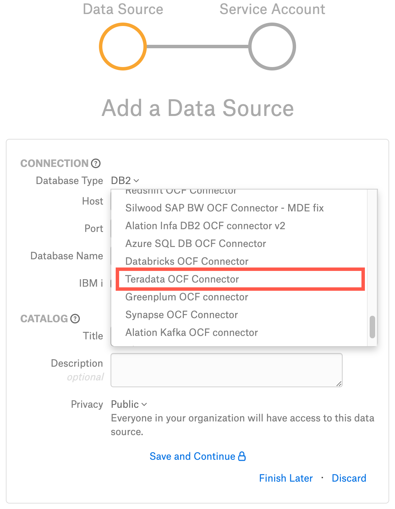

Teradata OCF Connector: Install and Configure¶
Alation Cloud Service Applies to Alation Cloud Service instances of Alation
Customer Managed Applies to customer-managed instances of Alation
Prerequisites¶
Ports¶
Open outbound TCP port 1025 to the Teradata server.
Create Service Account¶
Sample SQL to create an account:
CREATE USER alation FROM [database] AS PASSWORD = [password] PERM = 20000000;
Permissions for Metadata Extraction¶
Ensure the user alation has the following privileges on system tables.
GRANT SELECT ON dbc.dbase TO alation;
GRANT SELECT ON dbc.databasesv TO alation;
GRANT SELECT ON dbc.tablesv TO alation;
GRANT SELECT ON dbc.tabletextv TO alation;
GRANT SELECT ON dbc.tablesizev TO alation;
GRANT SELECT ON dbc.columnsv TO alation;
GRANT SELECT ON dbc.indicesv TO alation;
GRANT SELECT ON dbc.all_ri_parentsv to alation;
GRANT SELECT ON dbc.indexconstraintsv TO alation;
GRANT SELECT ON dbc.tvm TO alation;
GRANT SELECT ON dbc.tvfields TO alation;
If permissions for the DBase table cannot be granted and only the DatabasesV view is allowed, then disable the Extract Schemas From DBASE parameter on the Metadata Extraction tab under Connector Settings > Query Based Extraction. This parameter is available from connector version 1.0.10.
Permissions for Sampling and Profiling¶
For sampling and profiling, grant the service account the SELECT rights on all schemas and tables that you want to retrieve samples from.
Access Rules¶
Make sure that the service account user has the following access rules granted:
GRANT SELECT ON dbc.rolemembersv TO alation;
GRANT SELECT ON dbc.allRoleRightsv TO alation;
GRANT SELECT ON dbc.databasesv TO alation;
GRANT SELECT ON dbc.allrightsv TO alation;
JDBC URI¶
Format¶
teradata://<hostname_or_ip>/DBS_PORT=<port>,COP=OFF,CHARSET=UTF8
Example¶
teradata://10.13.75.49/DBS_PORT=1025,COP=OFF,CHARSET=UTF8
No additional parameters are required in the URI string when you are using an LDAP account for extraction, default sampling and profiling, and query log ingestion. In this case, the connector auto-appends the parameter LOGMECH=LDAP. However, when you are using an LDAP account for dynamic sampling or in Compose, you must explicitly append the parameter LOGMECH=LDAP to the JDBC URI.
Example¶
teradata://10.13.65.112/DBS_PORT=1025,COP=OFF,CHARSET=UTF8,LOGMECH=LDAP
Installation¶
Step 1: Install the Connector¶
Alation On-Premise¶
Important
Installation of OCF connectors requires Alation Connector Manager to be installed as a prerequisite.
To install an OCF connector:
If this has not been done on your instance, install the Alation Connector Manager: Install Alation Connector Manager.
Ensure that the OCF connector Zip file is available on your local machine.
Install the connector on the Connectors Dashboard page using the steps in Manage Connectors.
Alation Cloud Service¶
Note
On Alation Cloud Service instances, Alation Connector Manager is available by default.
Depending on your network configuration, you may need to use Alation Agent to connect to databases.
Connection via Alation Agent¶
Ensure that Alation Agent is enabled on your Alation instance. If necessary, create a Support ticket with Alation for an Alation representative to enable the Alation Agent feature on your instance and to receive the Alation Agent installer.
Connection Without Agent¶
To install an OCF connector:
Ensure that the OCF connector Zip file is available on your local machine.
Install the connector on the Connectors Dashboard page using the steps in Manage Connectors.
Step 2: Create and Configure a New Data Source¶
In Alation, add a new data source:
Log in to Alation as a Server Admin.
Expand the Apps menu on the right of the main toolbar and select Sources.
On the Sources page, click +Add on the top right of the page and in the list that opens, click Data Source. This will open the Add a Data Source wizard.
On the first screen of the wizard, specify a name for your data source, assign more Data Source Admins, if necessary, and click the Continue Setup button on the bottom of the screen. The Add a Data Source screen will open.
The only field that you need to populate on the Add a Data Source screen is Database Type. From the Database Type dropdown, select the connector name. You will be navigated to the Settings page of your new data source.
The name of this connector is Teradata OCF Connector.
Access¶
On the Access tab, set the data source visibility using these options:
Public Data Source—The data source will be visible to all users of the catalog.
Private Data Source—The data source will be visible to the users allowed access to the data source by Data Source Admins.
You can add new Data Source Admin users in the Data Source Admins section.
General Settings¶
Note
This section describes configuring settings for credentials and connection information stored in the Alation database. If your organization has configured Azure KeyVault or AWS Secrets Manager to hold such information, the user interface for the General Settings page will change to include the following icons to the right of most options:

{kind=link}
By default, the database icon is selected, as shown. In the vault case, instead of the actual credential information, you enter the ID of the secret. See Configure Secrets for OCF Connector Settings for details.
Perform the configuration on the General Settings tab:
Application Settings¶
Specify Application Settings if applicable. Click Save to save the changes after providing the information.
Parameter |
Description |
|---|---|
BI Connection Info |
This parameter is used to generate lineage between the current data source and another source in the catalog, for example a BI source that retrieves data from the underlying database. The parameter accepts host and port information of the corresponding BI data source connection. Use the following format: You can provide multiple values as a comma-separated list:
Find more details in BI Connection Info. |
Disable Automatic Lineage Generation |
Select this checkbox to disable automatic lineage generation from QLI, MDE, and Compose queries. By default, automatic lineage generation is enabled. |
Connector Settings¶
Data Source Connection¶
Populate the data source connection information and save the values by clicking Save in this section.
Parameter
Description
Data Source Connection
JDBC URI
Specify the JDBC URI in the required format.
Use LDAP Server
Select the Use LDAP Server checkbox to authenticate with the LDAP protocol.
Username
Specify the service account username.
Password
Specify the service account password.
Logging Configuration¶
Select the logging level for the connector logs and save the values by clicking Save in this section. The available log levels are based on the Log4j framework.
Parameter |
Description |
|---|---|
Log level |
Select the log level to generate logs. The available options are INFO, DEBUG, WARN, TRACE, ERROR, FATAL, ALL. |
Obfuscate Literals¶
Obfuscate Literals — Enable this toggle to hide the details of the queries in the catalog page that are ingested via QLI or executed in Compose. This toggle is disabled by default.
Test Connection¶
Under Test Connection, click Test to validate network connectivity.
Metadata Extraction¶
You can configure metadata extraction (MDE) for an OCF data source on the Metadata Extraction tab of the Settings page. Refer to Configure Metadata Extraction for OCF Data Sources for information about the available configuration options.
Metadata Extraction Queries¶
To use query-based metadata extraction, you will need to write custom queries to extract the metadata. Alation expects that these queries conform to a specific structure and use some reserved identifiers. After providing custom queries, save them by clicking Save in this section.
Refer to Extraction Queries for Teradata for information about query customization.
{kind=link}
Compose¶
For details about configuring the Compose tab of the Settings, refer to Configure Compose for OCF Data Sources.
Note
When you are using an LDAP account for connecting to your Teradata data source in Compose, you must
append the parameter LOGMECH=LDAP to the JDBC URI.
Sampling and Profiling¶
Sampling and profiling is supported. For details, see Configure Sampling and Profiling for OCF Data Sources.
Note
When you are using an LDAP account for dynamic sampling you must append the parameter
LOGMECH=LDAP to the JDBC URI.
Note
Alation does not support profiling of Teradata Temporal tables.
Query Log Ingestion¶
You can choose to create a table or a view on your database to store the query history data or to provide a custom query to retrieve the query history data.
Table-Based QLI¶
Use the query format to create a new view and flush the query history from the data source. You can create the view in a schema of your choice. In the query below, substitute the placeholder value <schema_name.view_name> with an actual value.
CREATE VIEW <schema_name.view_name> AS
SELECT
s.ProcID,
s.CollectTimeStamp,
s.QueryID,
UserID,
AcctString,
ExpandAcctString,
SessionID,
LogicalHostID,
RequestNum,
InternalRequestNum,
LogonDateTime,
AcctStringTime,
AcctStringHour,
AcctStringDate,
LogonSource,
AppID,
ClientID,
ClientAddr,
QueryBand,
ProfileID,
StartTime,
FirstStepTime,
FirstRespTime,
LastStateChange,
NumSteps,
NumStepswPar,
MaxStepsInPar,
NumResultRows,
TotalIOCount,
AMPCPUTime,
ParserCPUTime,
UtilityByteCount,
UtilityRowCount,
ErrorCode,
ErrorText,
WarningOnly,
((firstresptime - starttime) hour(4) to second) (Named ElapsedTime),
DelayTime,
AbortFlag,
CacheFlag,
StatementType,
StatementGroup,
sqltextinfo AS QueryText,
NumOfActiveAMPs,
MaxAMPCPUTime,
MaxCPUAmpNumber,
MinAmpCPUTime,
MaxAmpIO,
MaxIOAmpNumber,
MinAmpIO,
SpoolUsage,
WDID,
OpEnvID,
SysConID,
LSN,
NoClassification,
WDOverride,
ResponseTimeMet,
ExceptionValue,
FinalWDID,
TDWMEstMaxRows,
TDWMEstLastRows,
TDWMEstTotalTime,
TDWMAllAmpFlag,
TDWMConfLevelUsed,
TDWMRuleID,
UserName,
DefaultDatabase,
AMPCPUTimeNorm,
ParserCPUTimeNorm,
MaxAMPCPUTimeNorm,
MaxCPUAmpNumberNorm,
MinAmpCPUTimeNorm,
EstResultRows,
EstProcTime,
EstMaxRowCount,
ProxyUser,
ProxyRole,
SessionTemporalQualifier,
CalendarName,
SessionWDID,
DataCollectAlg,
ParserExpReq,
CallNestingLevel,
NumRequestCtx,
KeepFlag,
QueryRedriven,
ReDriveKind,
CPUDecayLevel,
IODecayLevel,
TacticalCPUException,
TacticalIOException,
SeqRespTime,
ReqIOKB,
ReqPhysIO,
ReqPhysIOKB,
r.sqlrowno
FROM dbc.dbqlsqltbl r,
dbc.dbqlogtbl s
WHERE r.queryid = s.queryid;
Grant the service account permissions to access this view.
In the Table Name field on the Query Log Ingestion tab of the Settings, specify the name of the view in the following format: schema_name.view_name.
Custom Query-Based QLI¶
If you cannot create the view for QLI, for example, due to access restrictions, you can use a custom QLI query to extract query history into Alation. If you opt for custom query-based QLI, Alation will query the system table storing query history or the table you’ve created to enable QLI every time you manually run QLI or when the QLI job runs on schedule.
For custom query-based QLI to succeed, ensure that the service account has enough permissions to select from the QLI table.
The template for the QLI query is given below. You can customize it by adding, removing, or changing the filter, but the columns and their aliases must remain as is since the connector expects this query structure.
Note
When using the QLI query template, do not substitute the STARTTIME and ENDTIME parameters in the WHERE filter. These parameters are not actual column names and should stay as is. They are expected by the connector and will be substituted with the start and end date of the QLI range selected in the user interface when QLI is run manually or on schedule.
To configure query-based QLI:
Go to the Query Log Ingestion tab of the Settings page of your OCF data source.
Under Connector Settings > Query Extraction, in the Custom QLI Query field, provide the QLI query.
Click Save.
QLI Query Template¶
SELECT
SessionID AS "sessionId",
UserName AS "userName",
StartTime AS "startTime",
sqltextinfo AS "queryString",
((firstresptime - starttime) hour(4) to second) AS "milliSeconds",
DefaultDatabase AS "defaultDatabases",
AbortFlag AS "cancelled",
LogonDateTime AS "sessionStartTime"
FROM dbc.dbqlsqltbl r,
dbc.dbqlogtbl s
WHERE r.queryid = s.queryid
AND r.procid = s.procid
AND sqltextinfo IS NOT null
AND LogonDateTime >= STARTTIME
AND LogonDateTime < ENDTIME
Perform QLI¶
You can either perform QLI manually on demand or enable automated QLI:
To perform manual QLI, under the Automated and Manual Query Log Ingestion section of the Query Log Ingestion tab, ensure that the Enable Automated Query Log Ingestion toggle is disabled.
Note
Metadata extraction must be completed first before running QLI.
Click Preview to get a sample of the query history data to be ingested.
Click the Import button to perform QLI on demand.
To schedule QLI, enable the Enable Automated Query Log Ingestion toggle.
Set a schedule under Automated Query Log Ingestion Time by specifying values in the week, day, and time fields. The next QLI job will run on the schedule you have specified.
Note
The hourly schedule for automated QLI is not supported.
Troubleshooting¶
Refer to Troubleshooting.